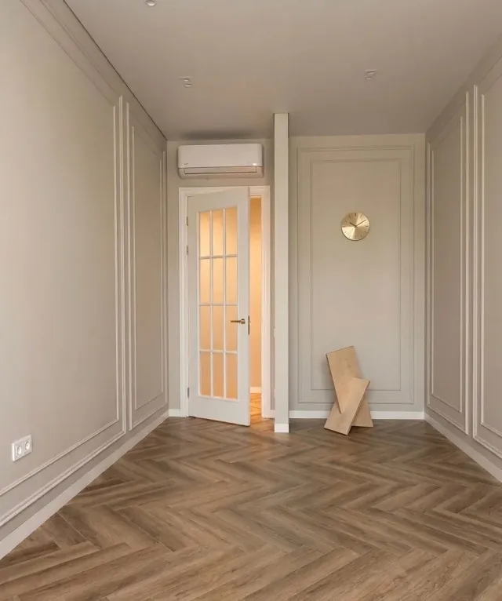

Peinture, enduits
et finitions
Préparation des supports, peinture murs et plafonds, enduits décoratifs et finitions : une peinture réussie se joue d'abord sur la préparation, c'est là que nous passons le plus de temps.


Préparation des supports, peinture murs et plafonds, enduits décoratifs et finitions : une peinture réussie se joue d'abord sur la préparation, c'est là que nous passons le plus de temps.
Une peinture dure tant que son support est sain. Un mur mal rebouché, un fond farineux non traité ou un traitement d'humidité oublié se rappellent à vous quelques mois plus tard, par des cloques, des fissures ou des traces. C'est pourquoi la préparation représente souvent la moitié du temps passé sur un chantier de peinture.
Nous intervenons en peinture intérieure et extérieure, sur murs, plafonds, boiseries et métal, ainsi qu'en enduits décoratifs : enduits lissés, effets de matière, stucco, béton ciré mural. Nous protégeons les sols et le mobilier, et nous rendons un chantier propre.
Pour une surface continue et durable dans les pièces d'eau, le béton ciré mural est une alternative à la peinture et à la faïence.
Rebouchage, ponçage, ratissage, traitement des fissures et des fonds fragiles : la surface est mise à niveau avant la première couche.
Application en deux couches de finition, avec la sous-couche nécessaire. Teintes, niveaux de brillance et produits sont choisis selon l'usage de chaque pièce.
Enduits lissés, effets de matière, stucco ou béton ciré mural : des finitions qui remplacent la peinture là où l'on veut du relief ou de la profondeur.
Plinthes, baguettes d'angle, raccords et retouches : le détail qui fait la différence entre une peinture correcte et une peinture irréprochable.
Chaque étape attend que la précédente soit sèche. C'est la durée de séchage, plus que le geste du peintre, qui rythme le chantier.
Nous observons l'état des murs, repérons les traces d'humidité, les fissures et les anciennes peintures à décaper. Le devis précise la préparation nécessaire pièce par pièce.
Sols, menuiseries, prises et mobilier sont protégés. Le mobilier est déplacé et regroupé sous bâche si nécessaire.
Rebouchage, ponçage, ratissage, application de la sous-couche. C'est l'étape la plus longue, et celle qui conditionne la durée de la peinture.
Application en couches croisées avec le temps de séchage recommandé entre chaque passe. Les plafonds sont faits avant les murs, les boiseries à la fin.
Retouches à la lumière du jour, retrait des protections, nettoyage complet. Nous parcourons les pièces avec vous avant de clore le chantier.
Le prix varie surtout avec l'état du support et le niveau de finition. Un mur sain se peint vite, un mur dégradé demande plus de préparation que de peinture.
| Prestation | Fourchette HT |
|---|---|
| Peinture murs / plafonds/ m² | 22 € – 55 € |
| Préparation des supports/ m² | 15 € – 40 € |
| Enduits décoratifs/ m² | 70 € – 180 € |
| Finitions/ ml | 12 € – 60 € |
Ces détails se voient une fois le chantier terminé, quand il est trop tard pour les modifier. Nous les évoquons systématiquement avant de commencer.
Une teinte change selon l'orientation, l'éclairage et les matériaux voisins. Un échantillon peint sur un grand format, observé le matin et le soir, évite les mauvaises surprises.
Le mat atténue les défauts mais se nettoie moins bien. Le velours ou le satiné conviennent aux cuisines, aux couloirs et aux salles de bain. Nous choisissons le produit selon l'usage, pas seulement selon la teinte.
Peindre sur un mur humide ne la fait pas disparaître : la peinture cloque. La source doit être identifiée et traitée, puis le mur doit sécher complètement. Ce point est contrôlé lors de la visite.
La peinture s'applique après la plomberie, l'électricité et les cloisons. La planifier trop tôt oblige à retoucher, et trop tard retarde la livraison. Dans un chantier complet, nous l'intégrons au planning.
Deux chantiers d'appartements. Retrouvez toutes nos réalisations.


Nombre de couches, séchage, humidité, enduits décoratifs : ce qu'il faut savoir avant de repeindre.
Visite sur site et devis détaillé gratuits. Réponse sous 24h.